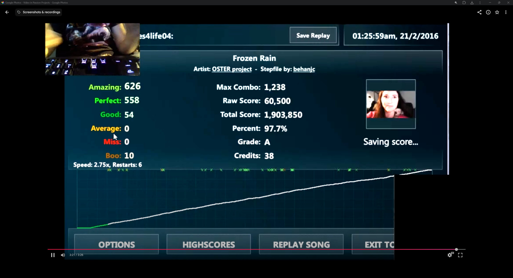
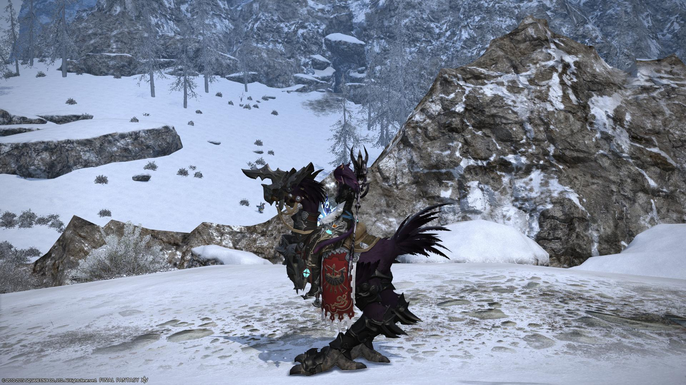
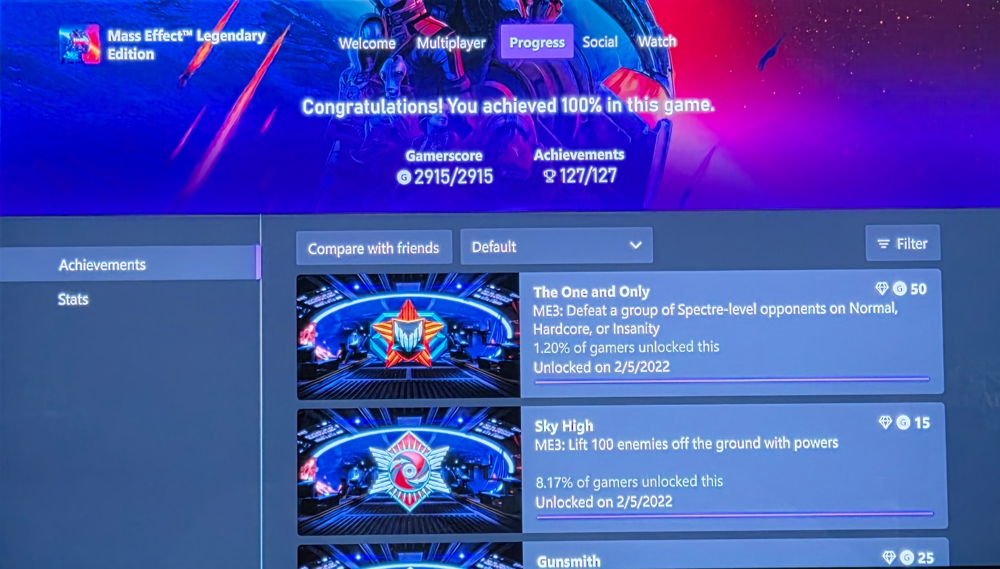
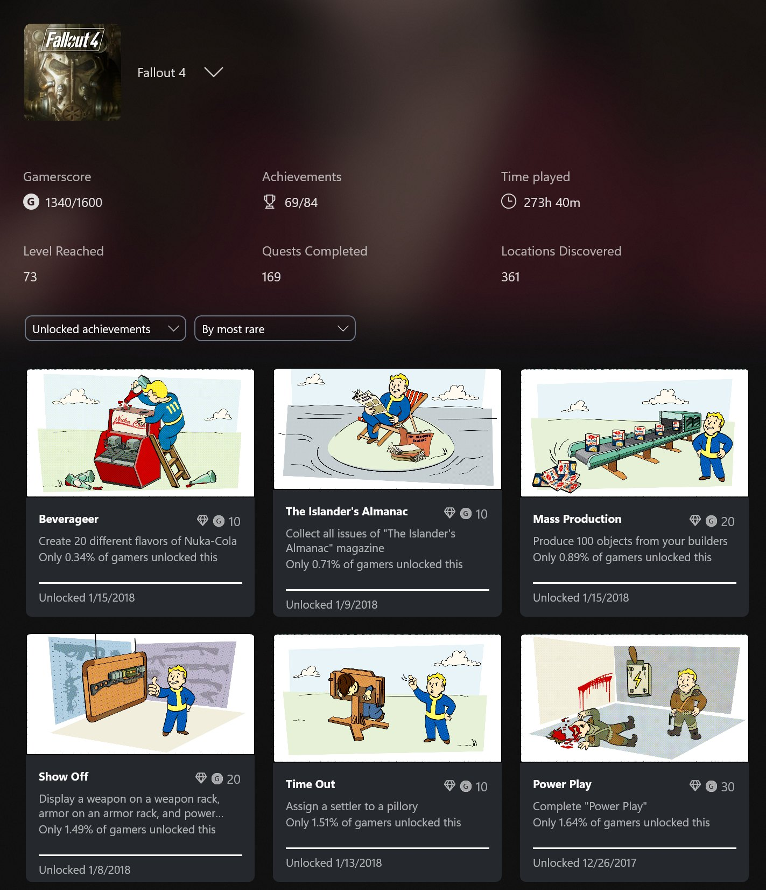
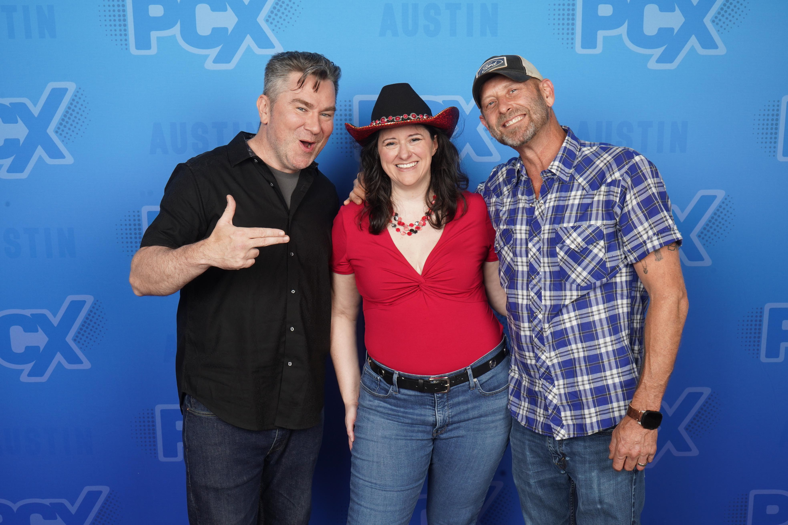
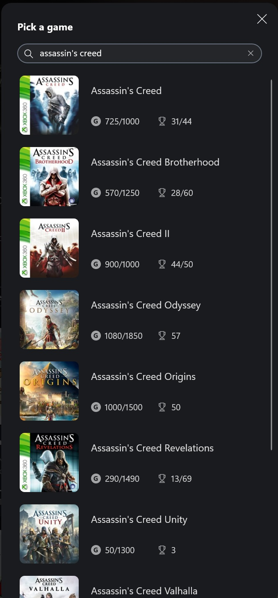
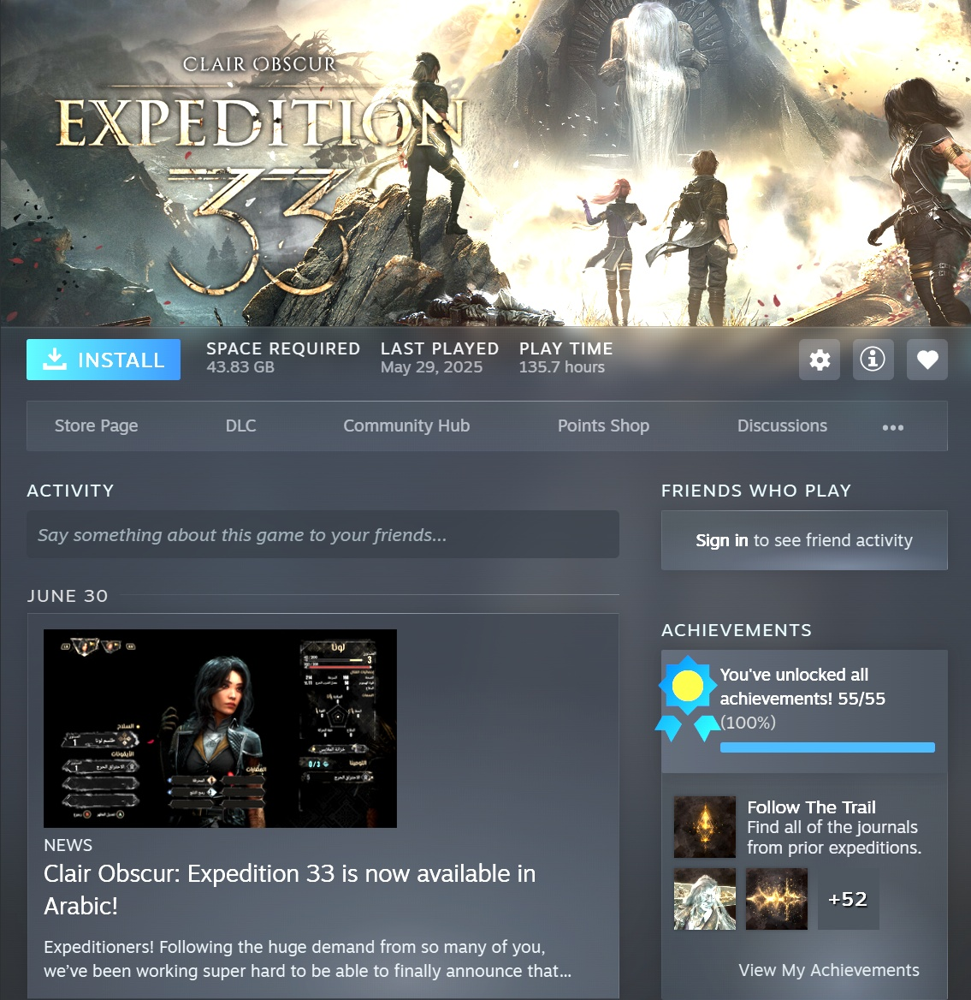
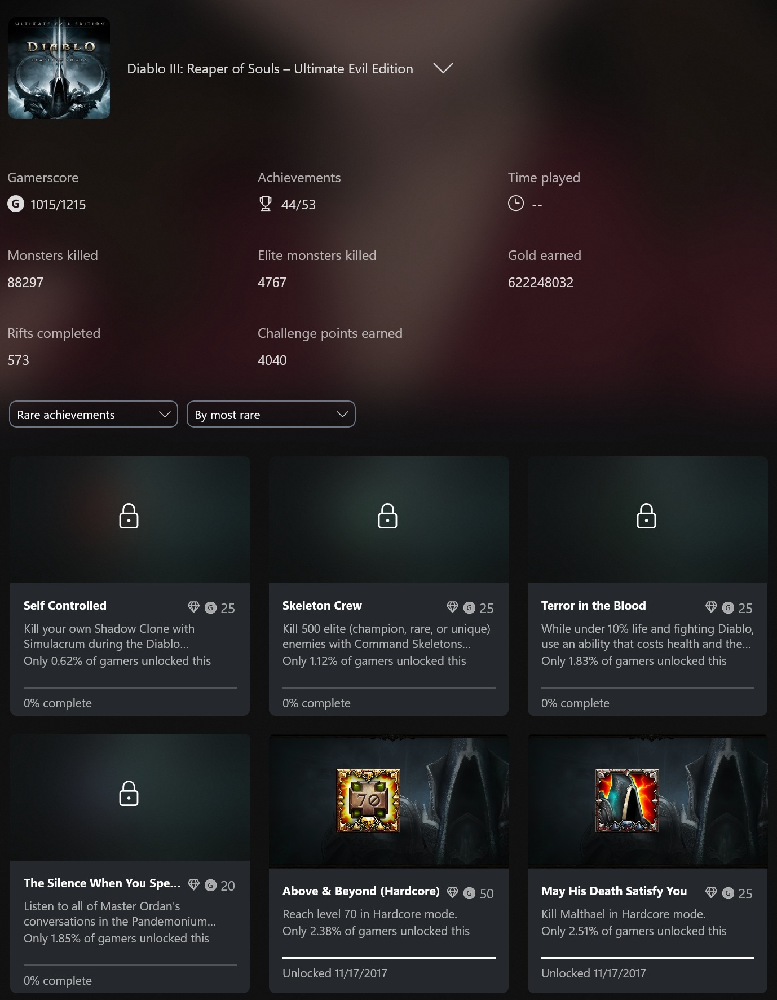
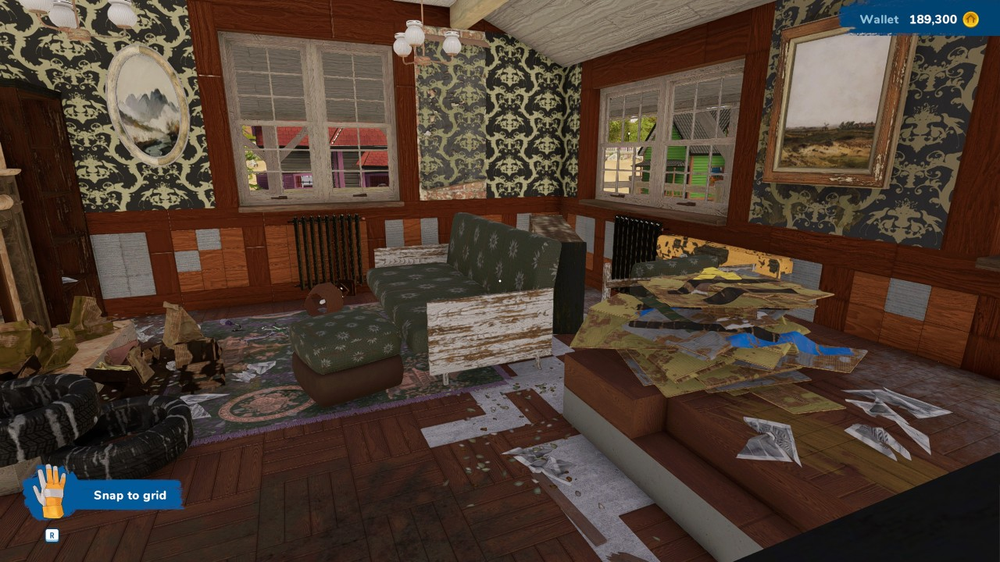
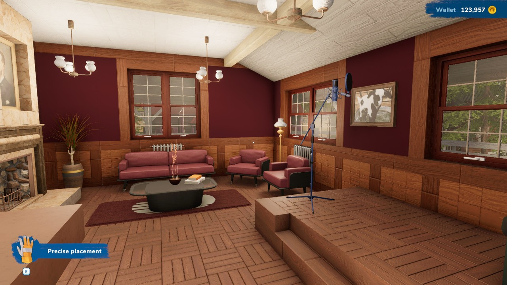

Gaming Moments that Shaped Me
This collection of screenshots and photos is a representation of important gaming moments that have shaped my journey as a player and as a person. Video games are less a hobby and passtime for me and more of a way to connect with others, explore complex narratives, and (usually) to relax.

Flash Flash Revolution
Web-based | 2007 | Rhythm
Flash Flash Revolution is a rhythm game inspired by Dance Dance Revolution. It is similar to the more commonly known Stepmania, but it is a flash-based game that can be played in a web browser. As a teenager and throughout my 20s I was an avid DDR player in arcades, enough that people recognized me. I met one of my best friends playing DDR in a putt-putt arcade. Flash Flash allowed me to keep playing the game even though my body aged out of arcades.

Final Fantasy XIV
MMORPG | 2010 | Square-Enix | Fantasy Online Multiplayer
Many days of my life have been spent playing Final Fantasy XIV over the years. I met wonderful people and have so many memories. Between the free company commeraderie, the house building, the in-game festivals and the group content I always found something to do. The game meant so much to me, my one tattoo is of my chocobo, Chocolato.

Mass Effect Legendary Edition (Includes ME1, ME2, ME3)
Action RPG | 2012 | BioWare | Science Fiction
Only 30% of games I play get completed. Of those, only a small percentage get 100% completion. Mass Effect 1, 2 and 3 were definitely on my top 10 favorite games of all time. I especially loved how the story and character choices flowed from one game to the next. While not a unique mechanic, the level of choice you got to make and the possible endings they had to create was impressive. Garrus was my chosen partner through every game. He barely survived.

Fallout 4
Open World RPG | 2015 | Bethesda Game Studios | Post-Apocalyptic Open World
Fallout 4 was unique that it was the first game where I had to step away for several days to make my final game choice. The decision was so conflicting to me that I just couldn't take it lightly. When I made the decision, all it made me want to do was play through again to experience the other endings. Obviously, choices matter is a theme for my open world RPGs.

Red Dead Redemption 2
Action-Adventure | 2018 | Rockstar Games | Western Open World
I have 3 posters above my computer desk, and one of those coveted spots is taken by Arthur Morgan from Red Dead Redemption 2. The RDR franchise was extremely well done in my opinion, with epic storytelling. RDR1 stands out for how they approached fluid music transitions which I had not noticed done so well before. Usually, music fades in and out and sounds kind of abrupt. Music here contained sort of a DJ transition so the flow sounded natural from one song to another. RDR2 was also one of the only games with an ending that still gets me:

Assassin's Creed
Action-Adventure | 2007 | Ubisoft | Historical Fiction
Even though I stopped consuming every Assassin's Creed game when they started releasing buggy, repetitive content, the earlier games were amazing to me. History was never my favorite subject in school. Thinking back, it is probably because I have hyperphantasia and have such a hard time remembering specifics like dates and names. My brain works visually, so the video game's narrative really helped me learn more than a dry history book. It also introduced the idea of memories being encoded into our DNA to me. Studies have shown this to be possible, so the idea of genetic memory is not as far-fetched as I thought when I first played the game.

Clair Obscure: Expedition 33
Action-RPG | 2025 | Spiders/Bandai Namco | Fantasy, Reactive Turn-Based
Clair Obscure: Expedition 33 is on my top 5 games list of all time. This masterpiece of storytelling, music composition, artistry, and gameplay is unforgettable. This game took me through the full emotional spectrum. In the end, I completed the game thinking that I wished AAA game studios would take notes. Game studios have tended to lay off their best people and bring in ramshackle developer teams to turn a profit first, a decent game second. The AA game studio proved to the gaming industry there is success in passion. If you care about the work, the profits will come.

Diablo III
Action-RPG | 2012 | Blizzard Entertainment | Dark Fantasy Dungeon Crawler
Diablo III is an example of one of my favorite on-again, off-again games that I can pick back up at any time when there is new content. While I am not desperate enough to try to 100% complete this game, I did get some fairly rare achievements. Sometimes, it is fun to just mindlessly kill a lot of things and see big numbers flash up on your screen. I spent a lot of time with my friends talking while playing because the content was fairly mindless unless you were doing hardcore levels. Lots of great memories here!


House Flipper
Simulation | 2024 | Empyreal Entertainment | Home Renovation Zen
I have way too many hours in House Flipper 1 and House Flipper 2. These types of simulation games give me a sense of accomplishment and relaxation. I can be creative and make something beautiful, and I can do it at my own pace or with a friend. Here is an example of a room makeover I was particularly pleased with.